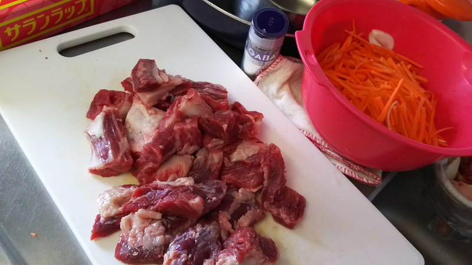
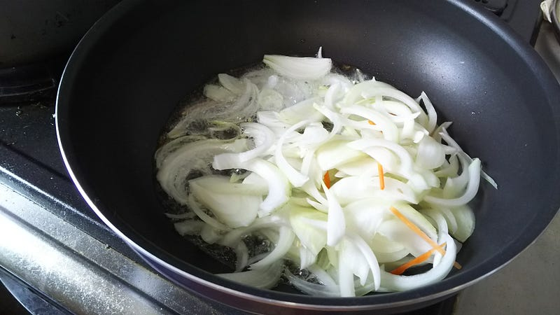
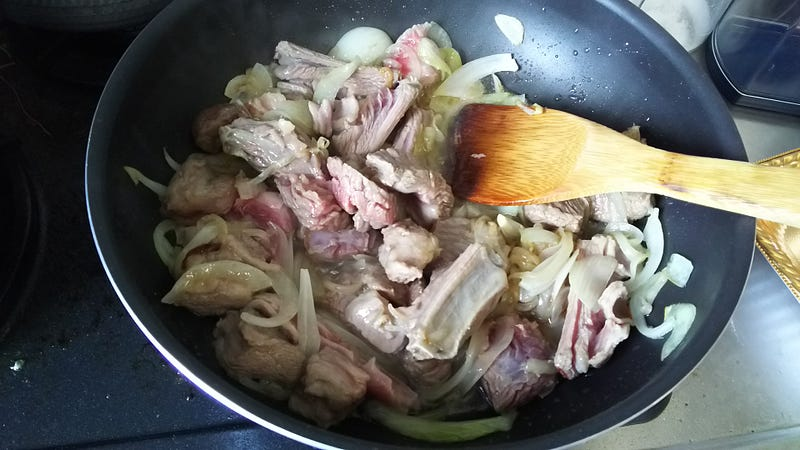
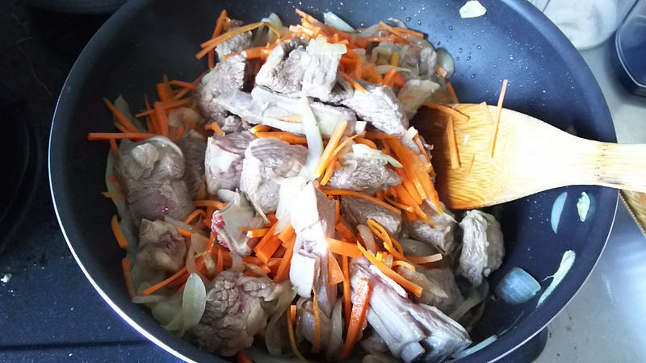
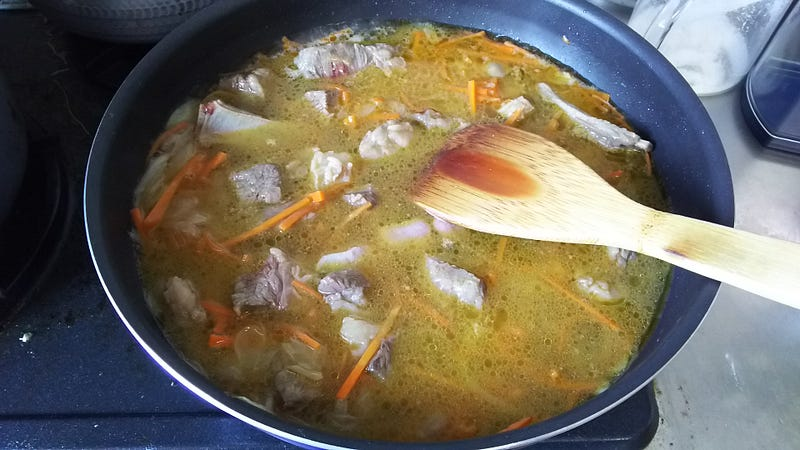
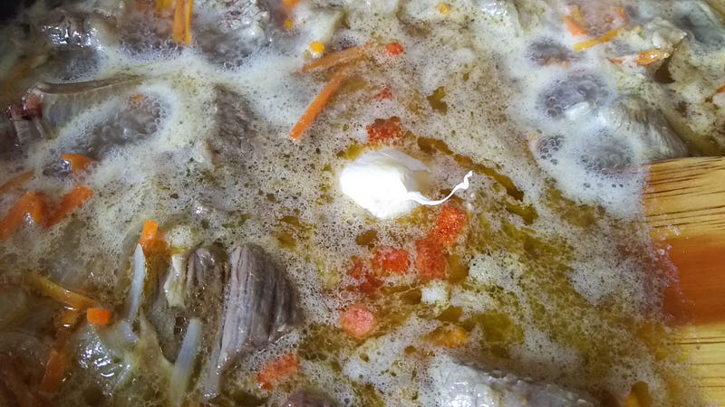
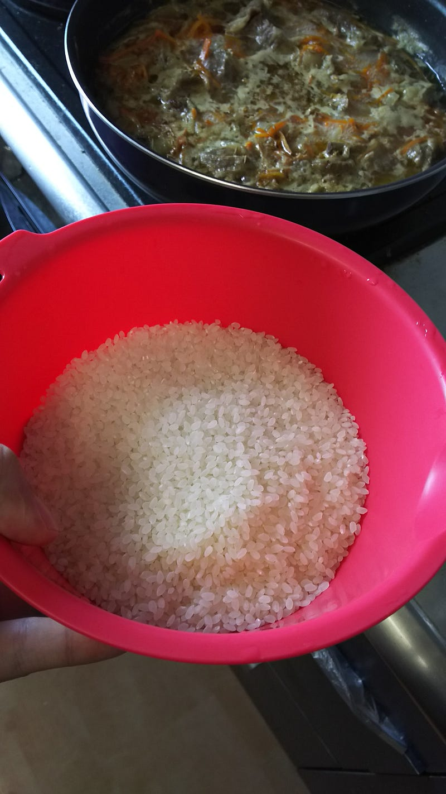
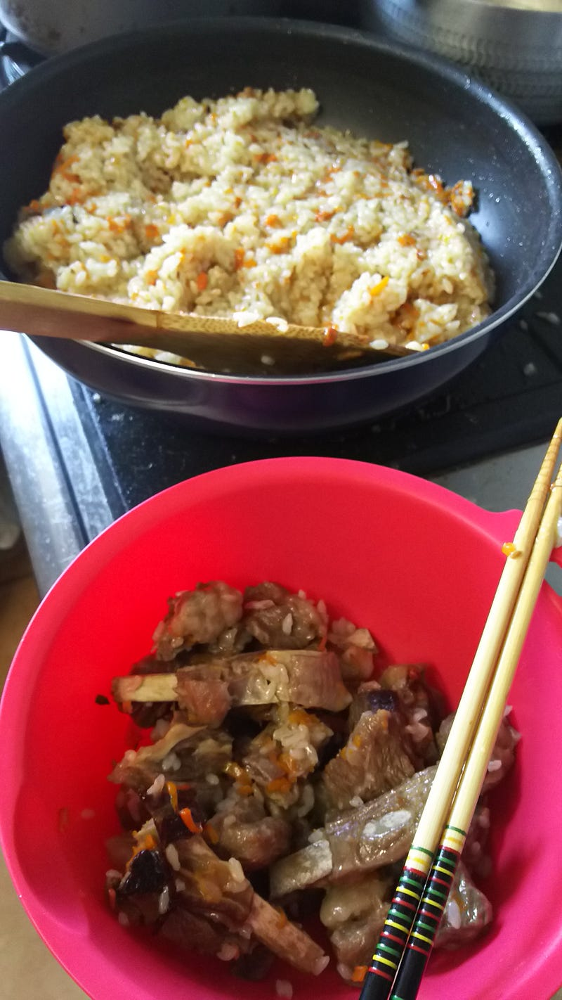
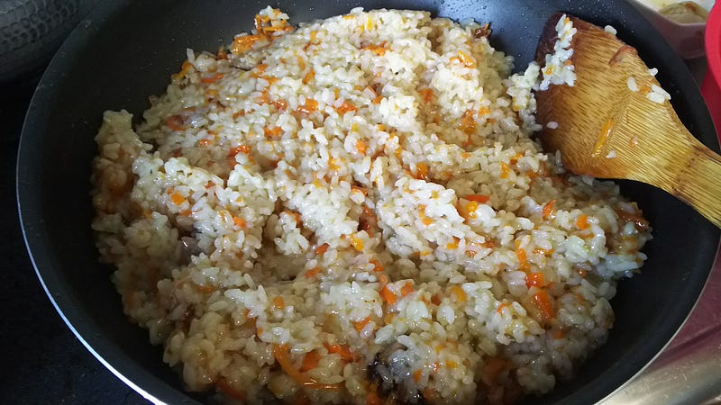
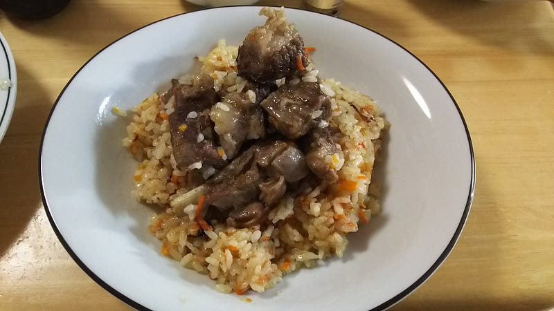

ウズベキスタン料理を作ってみる
ウズベキスタン料理を作ってみる
「THE 世界遺産」を見ていたらプロフ／ピラフという料理を作っているのが映し出されて、一瞬で虜になってしまった。
大鍋に油が張ってあり、そこにぶつ切り肉がどばどば投入され、野菜と炒められる。お米で蓋を作り、あとはそれを煮る。シンプルだ。美しい。食べたい。
日本だと「乙嫁物語」ででてきたシーンを知っている人もボチボチいるだろう。たちよった宿場のあの大きな釜で炊いているあれだ。
Amazon公式サイトで乙嫁語り(3) (ビームコミックス)を購入すると、Amazon配送商品なら、配送料無料でお届け。Amazonポイント還元本も多数。Amazon.co.jpをお探しなら豊富な品ぞろえのAmazon.co.jpwww.amazon.co.jp
森先生も再現をやってらっしゃる。
ということで、当然というかなんというか作ってみた（一緒に番組を見ていた妻にも「… 作るのね？」と先に言われた）。
とりあえず大まかなレシピはこちらを参照してみた。
◆鍋を強火にかけ、油150ccを注ぎ十分熱する 注：好み、地域により油の多少があるが、概して油は多め ◆タマネギを入れ、少し色づくまで炒める 注：このまま作るとベージュ色に仕上がるが、ここで、焦げ茶色になるまで炒めるやり方もあり、こうす…hayashimasaki.net
日本で手に入る肉も最近多様化しているので骨付き羊肉というのも手に入れようと思えば手に入るのだが、ここはもう少し常識的に日本でもやれる範囲での再現を試みる。
まず、肉は牛バラ肉と羊スペアリブにしてみた。この料理は油を大量に使うので牛バラ肉くらいはせめて… と思ってトリミングを徹底的にやって脂身を8割方削った。
あとはニンジンを短冊切りに、タマネギを適当な小ささに切って準備終了。お米は無洗米なので特にすることなし。

まずタマネギを炒めます。見て分かるとおり、わりと油は多め。

肉も入れて。

よ〜い、おじちゃんニンジンも入れちゃうぞ〜。あ、ちなみに森薫先生の再現記事にはニンジンは太めがいい、と書いてあったけど、これはまさにその通りで、そうじゃないとニンジンの正体がなくなります。思い切って太めにしましょう。今回はわりと常識的な太さにしてしまったのでその点は失敗…

ひたひたにして煮ます。もうこの時点で普通に美味しそう。

ここでニンニクを皮付きでポン、と投入。形を崩したくないので皮は少しだけ残した状態で入れておくんだぜ。

スープの味をこの時点で決めてしまう。スープにするにはちょっと味が濃いかな？くらい塩を入れる。味付け、油と塩だけ。日本には出汁という概念があるが、元々欧米では油と塩こそが美味しさだった、ということがよくわかる。
なお今回はレシピに灰汁についての記載が一切なかったので「まぁあの辺の人達灰汁とか気にしないで料理するだろ」と勝手に思い、灰汁の処理はしなかった。
このまま3〜40分ほど弱火で放置。

ここでやっとお米の出番。お米を入れる前にニンニクは取り出しておく。
どれくらいの塩梅にすればいいのかよく分からなかったので今回は米3合分を準備。これを先ほどの肉の上にかぶせ、具の蓋とする（お米の上にも蓋は使った）。水の量を調節して、一緒に煮る。本当はここでレーズンとかをいれたかったが、あいにく購入を忘れた。残念。ホールのクミンもここで入れる。クミンうまい。愛してる。
なおここからの調理は鍋で米炊きをしたことがあると色々リカバリーが効いて良い。今回もおおざっぱに調理してたので水加減が難しく、途中で何回も水の量を調節したりしたが、ここで水の量を誤って多くいれてしまうとおじやになってしまうし、我慢が効かなくて調理を早めに切り上げると見事に芯の残ったご飯になってしまうので 自分のように適当に料理を作る人は一旦普通に鍋でご飯を炊くという行為を練習しておくとよい。ちゃんとレシピを忠実に再現するなら多分大丈夫。
上にあげたレシピではある程度米を撹拌するような記述が見られるのだが、今回は鍋の大きさとかもあってあまりできなかったのでほとんど職人の勘と経験によってのみ微調整を行い、火加減・水加減をその場で調整していった。全体で30分くらい調理したかな。
最後には水がなくなって、ちりちりと音がしてくるが、ここで下の肉と野菜をすこ〜し焦がしてしまった。すぐに気づいたので問題はなかったが、より確実にするためには米を炊く際に汁だけ残して肉と野菜を一旦あげてしまうのが一番良い気がする。まぁこの辺りは最後に野菜とご飯を混ぜるという行程とかに影響してくるので次回以降考えたい。

ご飯が炊きあがったら、肉だけわける。これは飾り付けのため。残った野菜はご飯とわっしゃわっしゃ混ぜる。

と、こんな感じ。写真はちょっと水っぽいけど、ここからしばらく軽く水気を飛ばす感じにしたら写真よりかなりよくなった。
最終的にホールのクミンをもう少し追加して、盛りつけしてこんな感じ。

とろとろのお肉とその汁を吸ったお米がとてもいいです。今回は妻の希望でニンニクは混ぜ込まないで、各自お好みでいれたけれど、これはニンニクを混ぜ込んだほうがよりうまいと思う。煮込まれたニンニクはまろやかだけど強烈に主張して、大変よかった。
今回自分で作って見て、以前から「トルコで私も考えた」などで書かれているように、このプロフ・ピラフという食べ物は「おかずである」という認識を持てた。
アマゾン公式サイトでトルコで私も考えた―トルコ日常編 (集英社文庫)を購入すると、Amazon.co.jpが発送する商品は、配送料無料でお届け。Amazonポイント還元本も多数。本をお探しなら豊富な品ぞろえのAmazon.co.jpwww.amazon.co.jp
高橋先生はトルコ人がお米でできたピラフ（ピラウ）を食べながら「パンはどこだ！」と言うのを仰天しながら見ているという描写を何回かされているが、それと同じでこの料理はパンとかチャパティとか、なんかそういうもので包んで食べるのが一番美味しい気がする。これを主食にするにはコクもあるし、味も濃いし、なんというか旨すぎるのだ。
というわけで作り方はだいたいわかったので、次回からBBQ等のイベントがあるときには横でこっそり作ってみたいと思う。